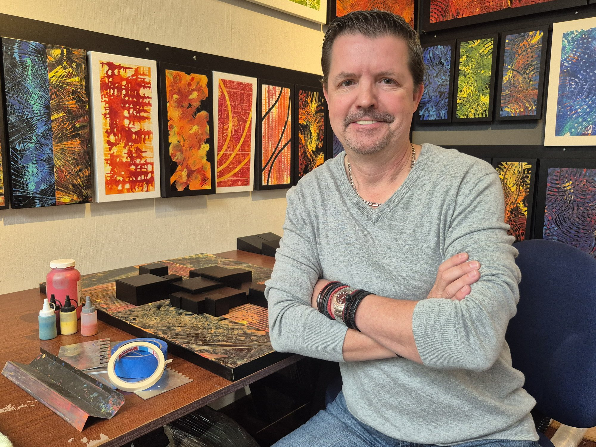
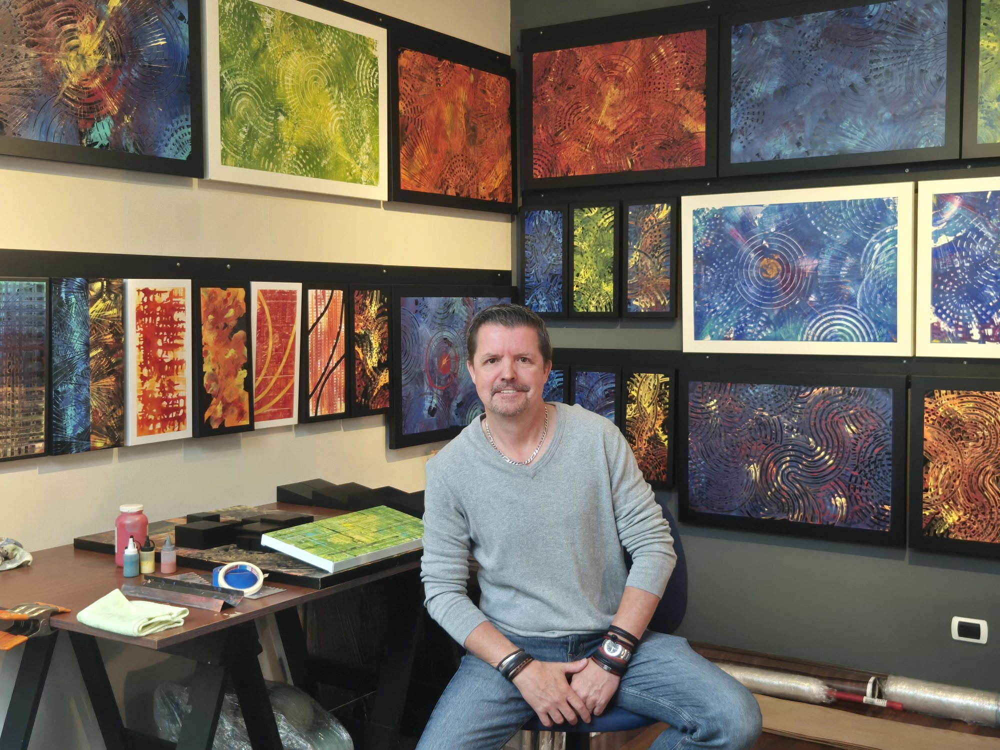
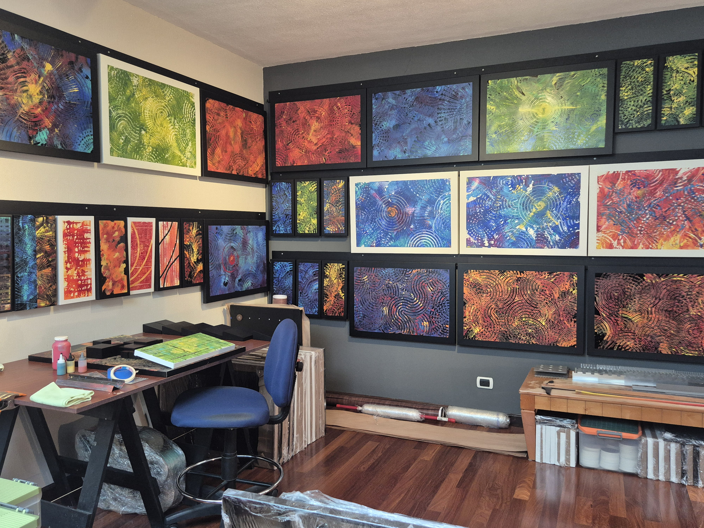
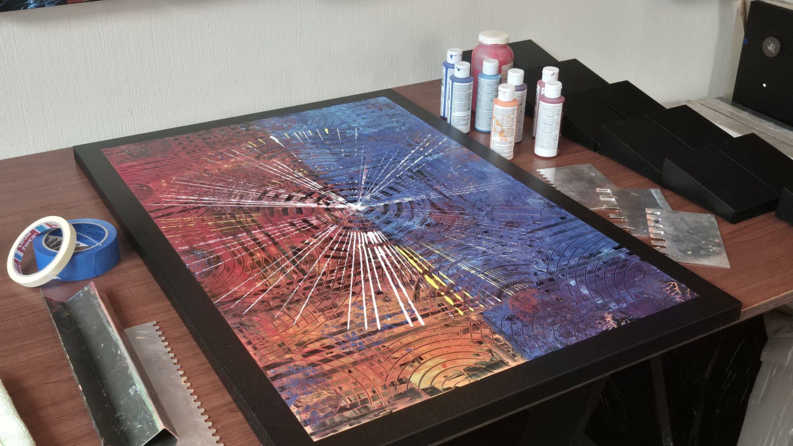

Home / About
About

Bio
POECH ART is the work of an abstract painter based in Guatemala City. An architect by training, he studied architecture in Guatemala and at Clemson University in South Carolina, and has worked in architecture and related fields for most of his career.
His passion for art and for making things has been constant since childhood. He painted through his school and college years, holding two solo exhibitions in Guatemala in the 1990s, and never really stopped. Over the following two decades he kept experimenting across materials and forms: acrylic on canvas and wood, CNC-cut designs on hard surfaces, string art and other works, most of them created for his own home.
In 2025 he began painting on aluminum. After a series of test works, he arrived at the concept behind the Circles Collection, 30 works in three series, which was featured that December in Artmosphere Magazine, Issue 41, distributed at Art Basel Miami and Miami Design Week. He is currently developing the Lines Collection and new work that builds geometric compositions from sections of aluminum tube mounted on aluminum panels.

Artist statement
I create abstract paintings that bring together geometry and organic flow, rhythm and chaos, simplicity and complexity. Working in acrylic on aluminum, I build my surfaces with tools I design and make myself, layering bright, vivid color into textures that carry movement and energy.
My fascination with geometry began in museums. As a teenager I visited the Centre Pompidou in Paris, MoMA in New York and SFMOMA in San Francisco, and I was struck by Picasso and Cubism, by Mondrian, Vasarely and Escher, and by geometric art in general. My background in architecture deepened that: architecture is, and should be, art, and the circles, arcs and grids in my work come from that way of seeing structure. In the paintings, I let that order overlap, break and ripple until it becomes something alive.
Guatemala is in the color. The greens of its landscapes, the blues of its lakes, the intensity of its traditional textiles, and the reds of its active volcanoes. I have seen lava up close, and that glowing, molten red finds its way into many of these works.
The aluminum itself came from architecture. Offcuts from a large façade project were about to be recycled when I saw in them something else: a surface to paint on. That instinct to find a new use for what is left over runs through everything I make.
I am self-taught, and that keeps me experimenting with techniques, materials and textures. Nothing is off-limits.

CV
Education
- 2000, B.A. in Architecture Design, Clemson University, South Carolina, USA
- Architecture studies, Guatemala
Solo exhibitions
- 1998, Rafael Landívar University Gallery, Guatemala City
- 1994, Estípite Gallery, Antigua Guatemala
Publications
- 2025, Artmosphere Magazine, Issue 41, featured artist, distributed at Art Basel Miami and Miami Design Week
Murals
- 1990s, murals for private residences, Guatemala
Bodies of work
- 2025, Circles Collection, 30 works, acrylic on aluminum
- In progress: Lines Collection; geometric compositions in aluminum sections on aluminum

Available for exhibitions and collaborations, in Guatemala and internationally. Get in touch